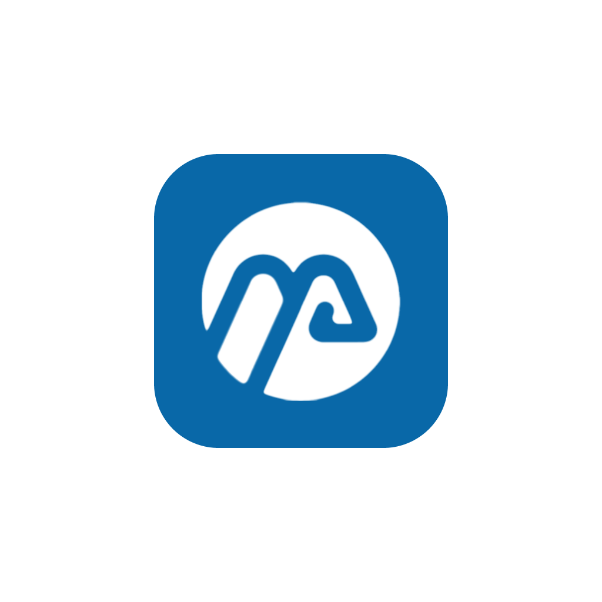

Skovvej 12, 4622 Havdrup +45 60 72 71 08 Emil@Rasmussen-Solutions.dk

Sagsstyring til håndværkere, fra tilbud til faktura.
En håndværksmester har ofte tilbud i ét program, timer i et andet, fakturaer fra grossisten i en mailboks og regnskabet hos bogholderen. Mesterplan samler sagen: tilbud, planlægning, timer, materialer og faktura, koblet direkte til grossisten, regnskabet og lønnen.
Alt i Mesterplan hænger på sagen. Et tilbud får sit eget fortløbende nummer, og når kunden siger ja, bliver det til en sag med ét klik. Kalkulationen følger med, så budgettet på sagen er det, der blev lovet i tilbuddet.
Store opgaver kan deles op i delprojekter. Hvert delprojekt får sit eget nummer under hovedsagen, fx 1001-1 og 1001-2, med eget budget, egne timer og egne materialer.
De fleste håndværkssager faktureres i rater. Mesterplan lader mesteren fakturere efter stade på hver linje i tilbudslisten, i kroner eller procent, både på hovedsagen og på delprojekterne.
Bagefter viser sagen, hvor meget der er faktureret, og hvad der mangler, fordelt på hovedsag og delprojekter.
Mesteren uploader en PDF-tegning og får et mængdeudtag: vinduer, døre, formsten, fuger og arealer. Hvert tal har en sikkerhed, og usikre tal er markeret, så man ved, hvad der skal tjekkes, før det går i et tilbud.
Man kan også stille spørgsmål til tegningen. Svarene holder sig til det, der står på tegningen, og siger til, når de ikke kan vide det.
Grossisterne sender deres fakturaer som e-faktura over NemHandel. Mesterplan tager imod dem og læser sagsnummeret i fakturaens reference. Passer det til en sag, bliver fakturalinjerne automatisk til materialer på sagen. Passer det ikke, lander fakturaen i en indbakke, hvor den kan lægges på den rigtige sag med et par klik.
Modtagelsen kører i dag på vores egen virksomhed og rulles nu ud til kunderne.
Et tilbud er kun så godt som priserne bag det. Mesterplan kan indlæse Bygmas prisbog, hele kataloget med brutto- og nettopriser og EAN-numre. Vi har testet det på en rigtig prisfil med over 13.000 varer.
En ny prisfil erstatter den gamle i én omgang, og varerne sorteres automatisk i firmaets varegrupper efter ByggeBasens inddeling. Ved siden af har firmaet sit eget prisbibliotek til egne ydelser og kalkulationer. Flere grossister er på vej.
Mesterplan er koblet til e-conomic. Kunder og produkter synkroniseres, fakturaer oprettes og bogføres i e-conomic, og betalinger registreres, så sagen ved, hvad der er betalt.
Opsætningen henter kladder, konti og produkter direkte fra e-conomic-aftalen, og hver bilagskategori, fx materialer, værktøj og underentreprenører, får sin egen konto. Dinero kan også forbindes.
Timerne er allerede registreret på sagerne, så de skal ikke tastes igen til lønnen. Mesterplan sender dem til Danløn som lønarter, med medarbejdere og lønkoder koblet sammen én gang for alle.
Danløn-integrationen er bygget og sættes nu i drift hos de første kunder. Zenegy, DataLøn og EG Lønservice er på vej.
Kvalitetssikringen ligger på sagen: tjeklister, afvigelser, udstyr og medarbejdernes kompetencer, med skabeloner til KLS.
Underentreprenører kan inviteres ind på én sag uden at se resten af firmaet, og mangler kan sendes ud via et link, der kan åbnes uden login.
Mesterplan har sin egen MCP-server. Det betyder, at en AI-assistent som Claude kan slå sager op, finde kunder og oprette projekter i Mesterplan på brugerens vegne, med de samme rettigheder som brugeren selv.
En kobling til vores værktøjssystem Trackrs er bygget og på vej, så værktøj og omkostninger fra Trackrs kan lande på den rigtige sag.
AI-tallene er vejledende, og det står der. En mester skal kunne stole på et tilbud.
Pilotfirmaerne sender ønsker og fejl, og vi arbejder dem igennem punkt for punkt.
Grossist, regnskab og løn, så fakturaer, bilag og timer ikke skal tastes to gange.
Tegningsanalysen giver et tal og en sikkerhed, og mængderne skal efterses, før de går i et tilbud.
Nye funktioner går i drift bag et flag og tændes for én kunde ad gangen.
Vi bygger apps og platforme, hvor data, hardware og mennesker skal hænge sammen. Ring eller skriv, så tager vi en snak om jeres opgave.
Besøg mesterplan.dk →hjælper virksomheder med at udvikle skræddersyede apps og digitale platforme, der effektiviserer processer og skaber værdi gennem innovative løsninger.